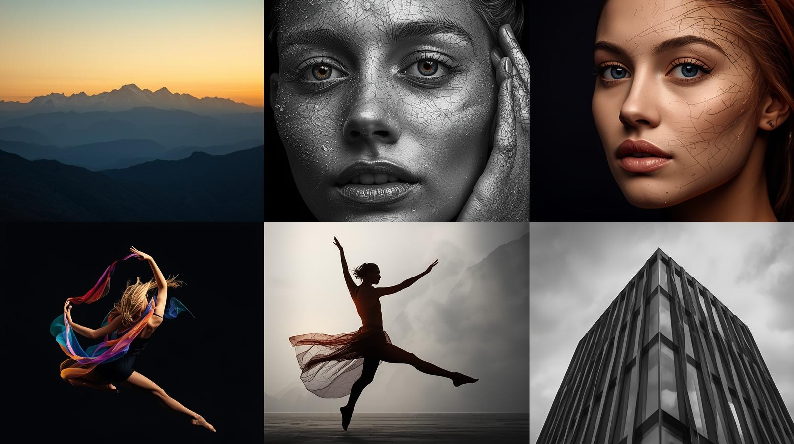
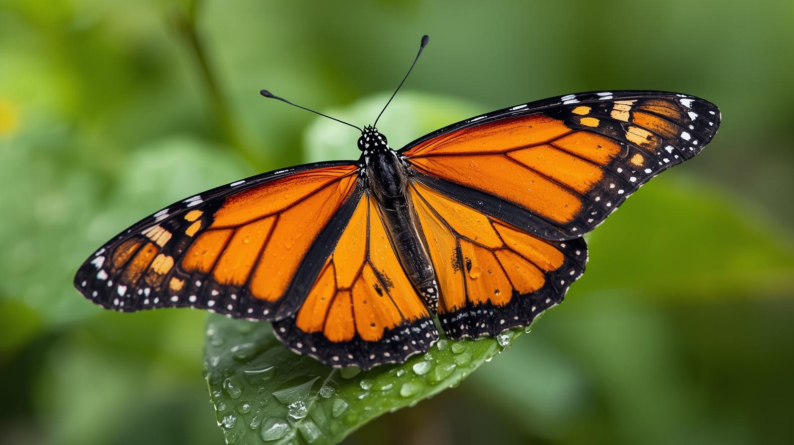
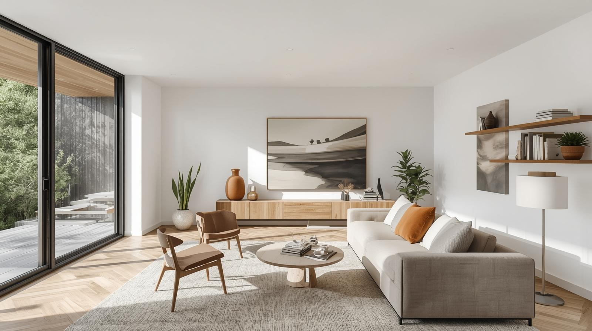
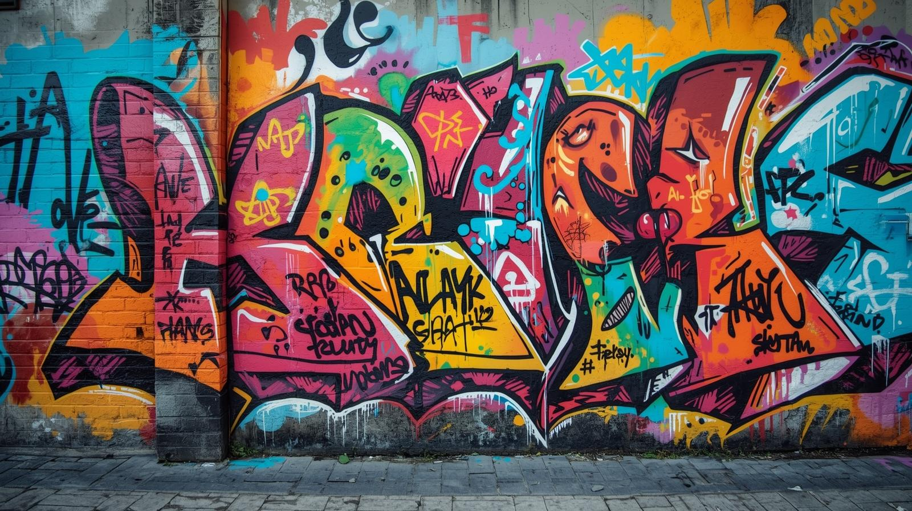
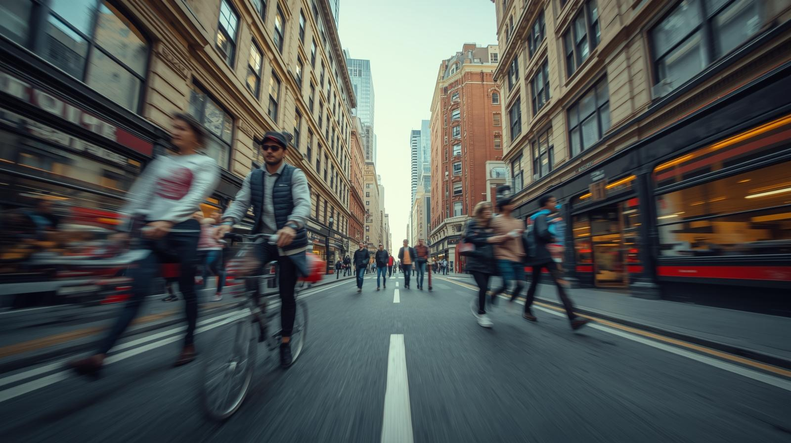
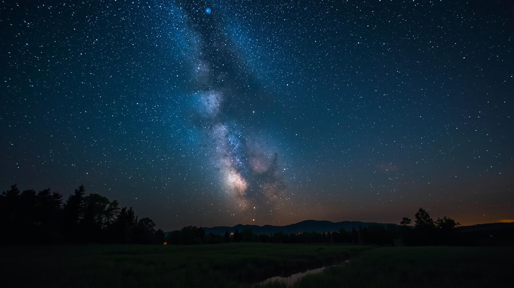

Fragments of Light & Shadow
Every frame here is a quiet conversation between light, silence, and the world as I see it. Welcome to my monochrome universe.
Photo Gallery






Featured Media
Gallery Video
About This Gallery
This gallery is a small piece of my world—shaped by moments that stayed with me long after I put the camera down. I’ve kept everything simple and monochrome so nothing distracts from the feelings inside each frame. The clean layout and soft, glass-like touches reflect the way I like to move through my work: quietly, thoughtfully, letting every image breathe and tell its own story at its own pace.